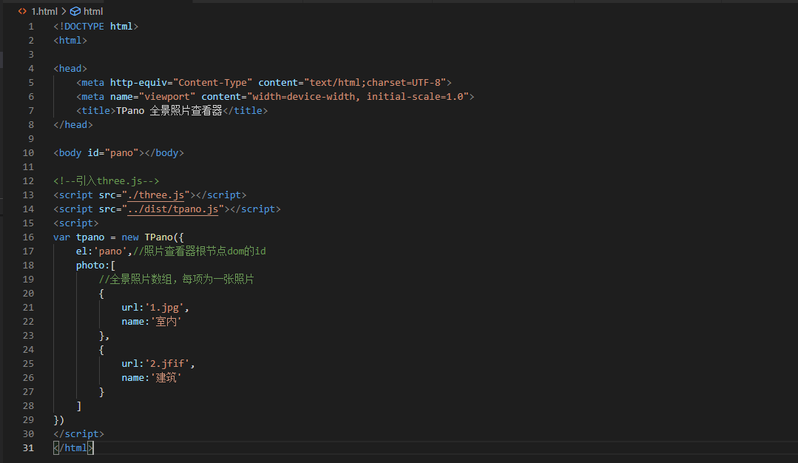
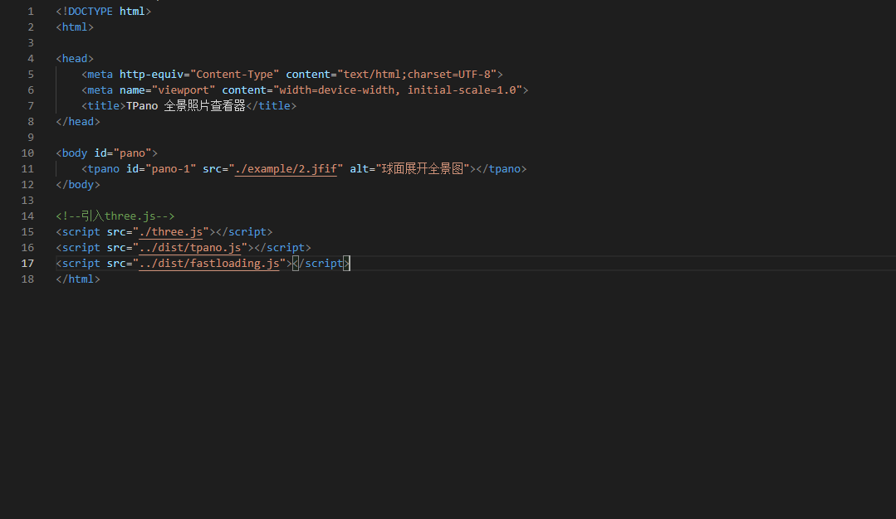

项目简介 / Introduce

相机输出的球面展开全景图
使用 TPano 加载的全景场景
通过市面上常见的3D相机和智能手机APP我们可以得到包含全方向视角像素点的全景照片或视频，TPano将展开的全景图片和视屏映射到虚拟的球体表面，在球心放置透视相机，通过透视相机输出画面，结合一些基于经纬、欧拉角的转换控制算法实现视角自由控制。
特征 / Features
开源
本项目开源在 Gitee，使用 MIT 开源协议，可免授权商用、修改。同时欢迎 加入开源仓库 一起让它变得更加完善。
易用
项目尽可能的对复杂的 3D 场景构建工作进行了底层屏蔽，使用了面向对象化的编程理念来简化了集成应用难度。通过 阅读文档 了解如何使用。
可控
生成的全景场景可以接受鼠标交互，也支持移动端触屏交互和方向传感器控制，通过 Demo 体验一下。
适配
依附于 WEB 天生的跨平台能力，本项目也能做到跨平台，并且对于屏幕尺寸适配和控制给出了丰富的 API。
基于众多的特征支持下，开发人员不必在意全景照片显示器内部需要使用何种技术实现 3D 渲染和模型控制，就可以很轻松的将全景照片功能集成到自己的项目中，在全景照片技术逐渐广泛应用的当下，我们也觉得需要有一种方式可以很快速的实现在 WEB 网页上显示全景照片，本项目就是基于这样的目的立项开发，并将保持开源免费。
接入方式 / Install
标准接入
使用标准接入可以调用 TPano 的全部接口能力，更为强大
快速接入
使用标快速接入可以实现零配置低代码接入，全自动加载，就像使用 img 标签一样简单
开发人员可以根据项目需求任选一种接入方式进行接入，使用零配置低代码的接入方式控制功能可能会受到限制，如您想要获得最全面的功能体验，请使用标准接入。